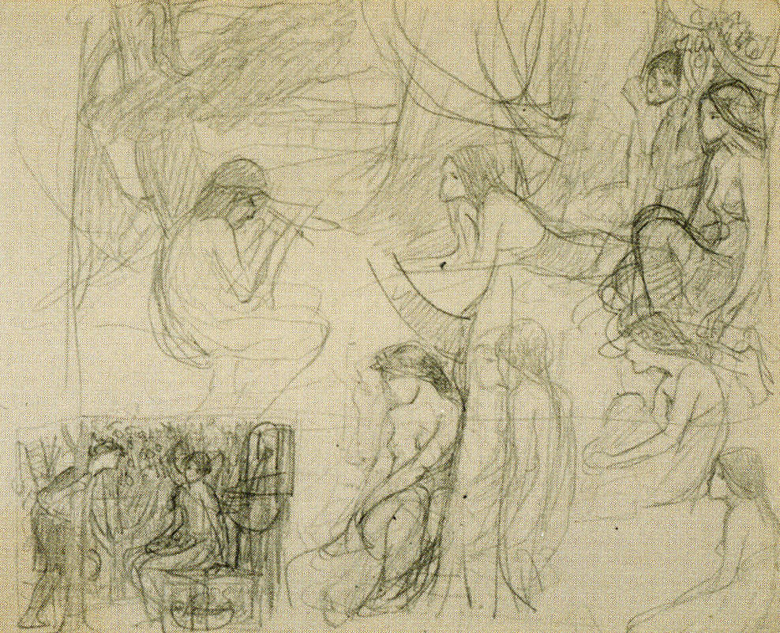
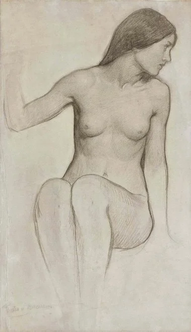
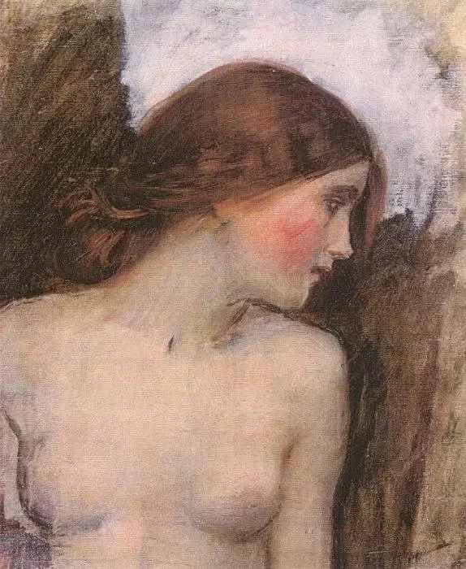
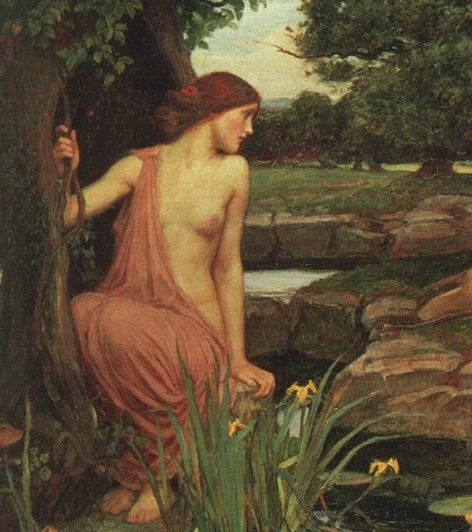
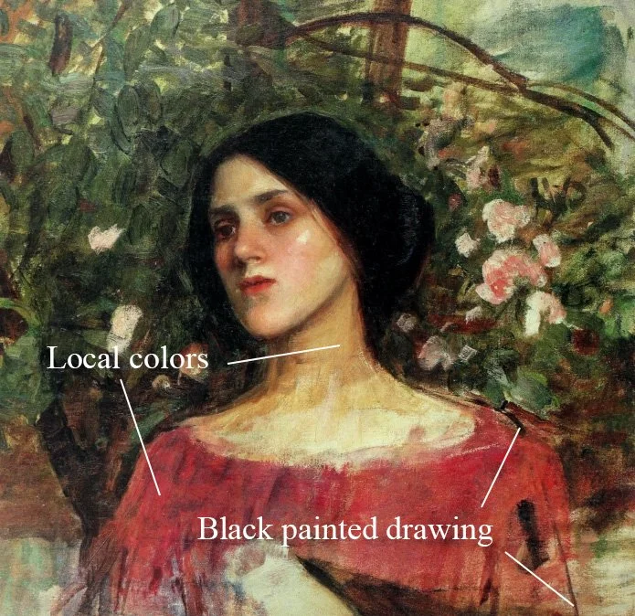

Techniek
Zijn Proces
Waterhouse begon altijd met het schetsen van de figuren in verschillende poses en gebruikte dit als een basis voor de rest van zijn composities. Als de compositie klaar was, liet Waterhouse zijn modellen in deze poses staan, zodat hij deze poses kon bestuderen. Daarna begon hij met olieschetsen op een klein formaat.




Foto's die het proces van J.W. Waterhouse zijn schilderijen laten zien
Er is verder niks bekend van het proces tijdens het schilderen van het echte werk, maar aan de schilderijen kan je zien dat hij begon met donkere streken om de compositie vast te leggen, waar hij daarna overheen is gegaan met middentonen, voordat hij deze vormen driedimensionaal liet lijken.
“They seem to have no idea of setting a palette and are too much addicted to the use of small brushes.”
- J.W. Waterhouse

Mijn Interpretatie
Ik heb zelf alleen nog maar met waterverf en vooral acrylverf geschilderd, dus ik ga nu oefenen met olieverf om te kijken hoe dit gaat, en of dit een optie is om ook echt voor mijn eindopdracht te doen. dat doe ik aan de hand van een video die een master studie laat zien van het schilderen van een portret van een schilderij van Waterhouse.